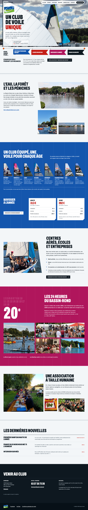
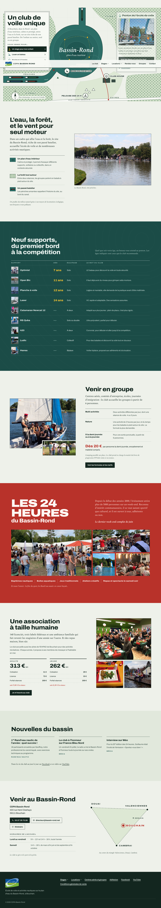
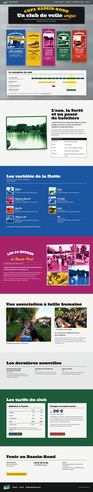

Page d'accueil : trois directions artistiques
Trois pistes construites avec les mêmes contenus et les vraies photos du club. Ouvrez-les sur ordinateur puis sur mobile, et choisissez celle qui devient l'univers du site.

A — La Voilerie
La voile est la page : les laizes, les coutures et les numéros de voile géants forment la mise en page.

B — Le plan d'eau
Une carte dessinée du Bassin-Rond sert de navigation : chaque activité se trouve à l'endroit où elle se pratique.

C — Le présentoir des saisons
Chaque activité est un sachet : la promesse au recto, le pratique au verso, rangés selon l'année du club.